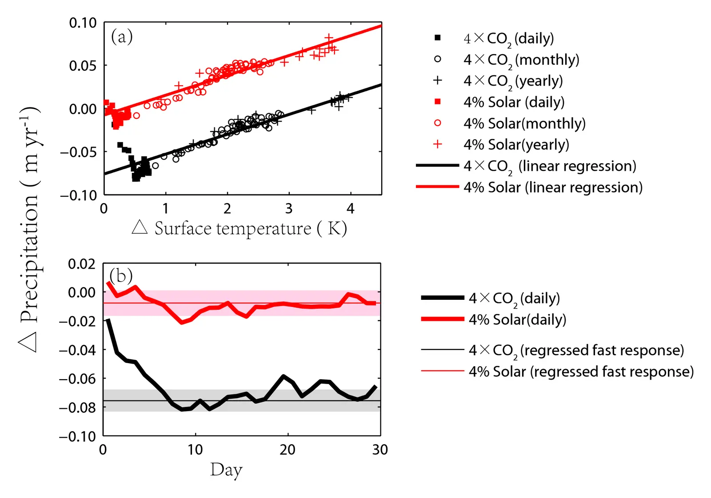

Climate response to changes in atmospheric carbon dioxide and solar irradiance on the time scale of days to weeks
Key finding. Significant climate effects appear within days of a stepwise increase in either atmospheric CO2 or solar irradiance, but they differ in kind — over ocean, increased CO2 warms the lower troposphere more than the surface, increasing atmospheric stability, moistening the boundary layer, and suppressing evaporation and precipitation, whereas increased solar irradiance produces a much smaller change.

What question did this research address?
Solar geoengineering rests on the premise that reduced sunlight can substitute for reduced CO2. Whether that substitution is clean depends on whether the two forcings act on the climate in the same way.
Fast responses, occurring within a month and before the surface has warmed, had been shown to matter for long-term climate change. This paper asked how the fast response to quadrupled CO2 differs from the fast response to increased solar irradiance.
What did we find?
The study contrasts a step-function quadrupling of atmospheric CO2 against a 4 per cent increase in solar irradiance, examining the response on timescales of days to weeks.
Over ocean the two forcings diverge sharply. CO2 warms the lower troposphere more than the surface, which increases stability, moistens the boundary layer, and suppresses evaporation and precipitation. Solar forcing warms the lower troposphere far less and changes evaporation and precipitation much less.
Over land the two are more alike in sign. Both produce rapid surface warming that tends to increase evaporation and precipitation.
A distinctly non-radiative effect operates over land as well. The physiological response of plant stomata to higher CO2 reduces transpiration, drying the boundary layer — an effect that increased sunlight does not produce at all.
Why does it matter?
The differences appear before any surface warming has occurred, which means they are properties of the forcings themselves rather than consequences of the climate response. They cannot be removed by tuning the magnitude of the intervention.
That is directly relevant to solar geoengineering. Sunlight reduction can cancel the temperature effect of CO2, but the hydrological and physiological effects belong to CO2 alone, so the substitution is incomplete however carefully it is calibrated.
Citation, data, and code
Long Cao, Govindasamy Bala, and Ken Caldeira (2012). Climate response to changes in atmospheric carbon dioxide and solar irradiance on the time scale of days to weeks. Environmental Research Letters 7, 034015.
Related
- Could reflecting sunlight substitute for reducing carbon dioxide?
- Geoengineering Earth's radiation balance to mitigate CO2-induced climate change (Govindasamy and Caldeira, 2000)
- Fast and slow climate responses to CO2 and solar forcing — a linear multivariate regression model characterizing transient climate change (Cao et al., 2015)